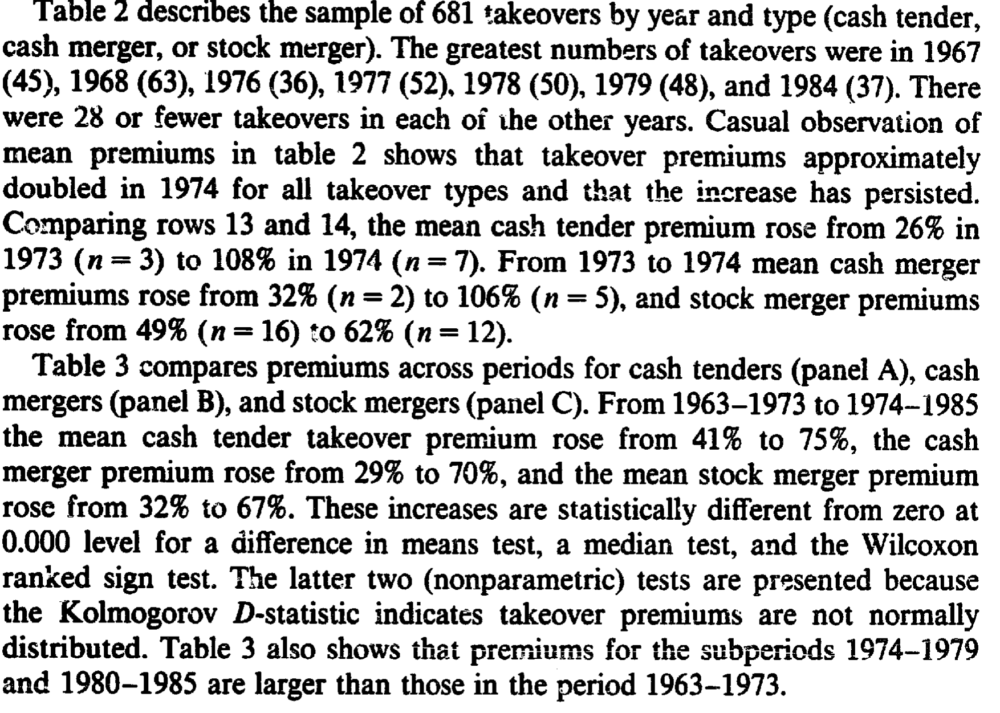
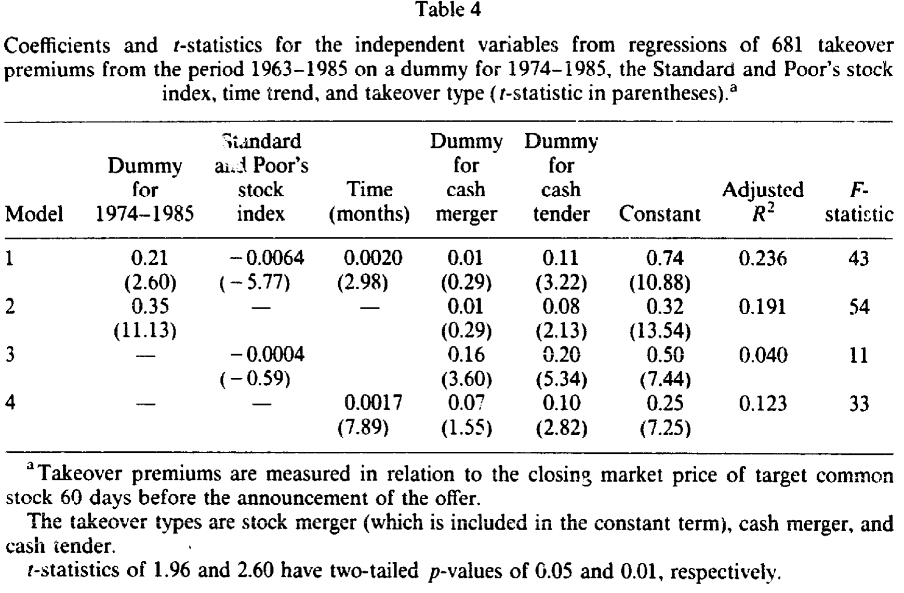
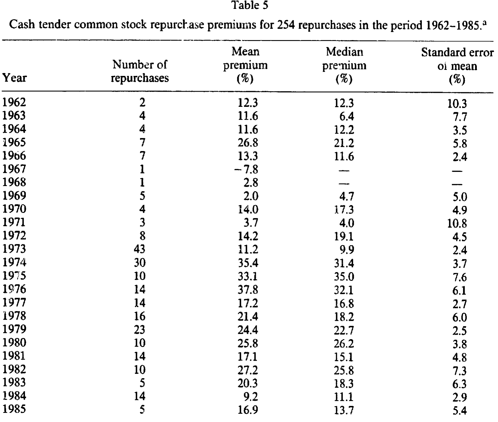
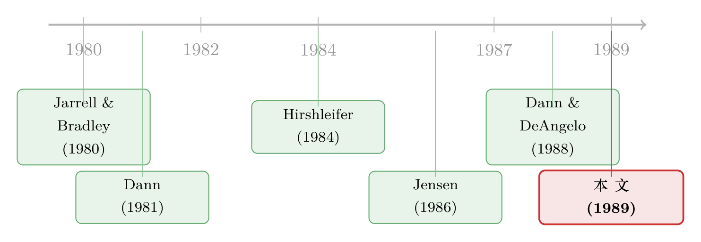

溢价为什么在 1974 年翻了一倍：一条藏在「供给曲线」里的暗线
本文读的是 Nathan & O'Keefe (1989, Journal of Financial Economics)：1963–1985 年间，美国三类收购（现金要约、现金合并、换股合并）的平均溢价在 1973–1974 年前后几乎整整翻了一番，并且在控制了商业周期与时间趋势之后依然成立。更妙的是，他们找来一批只想买回 15.9% 自家股票的回购样本——一笔体量与收购天差地别的交易——发现它的溢价竟然在同一年同步抬升。两条平行的跳升，把矛头指向了一个并非收购市场所独有的市场级事件。
1 一个被「翻了一番」的数字
先看一组数字，再听故事。
把美国 1963 到 1985 年间的收购拉成一条时间轴，会看到一件相当扎眼的事：以 1973–1974 年为界，前后两段的收购溢价 (takeover premium)——也就是收购方为目标公司股票支付的、相对此前交易价的那一截加价——几乎整整翻了一倍。现金要约 (cash tender) 的平均溢价从 41% 跳到 75%，现金合并 (cash merger) 从 29% 跳到 70%，换股合并 (stock merger) 从 32% 跳到 67%。三种交易方式，三条曲线，却在同一个时点上集体抬腿，而且这一抬就再没落回去。
这就是全文的悬念所在：为什么是 1974 年？为什么三类收购同时跳？

Table 2: describes the sample of 681 takeovers by ye&r and type (cash tender
一个数字翻倍本身并不稀奇，稀奇的是它的「整齐」。如果只是某一类收购变贵了，我们大可以从那一类的制度、税收或会计处理里找原因。可现在是三类一起翻倍，这就逼着我们去想：会不会有一个更上游、更一般的东西在背后推手？
2 先把「什么时候跳」钉死
首先要回答的，其实是一个看似简单、却容易被糊弄过去的问题：跳变到底发生在哪一年？
作者坦率地承认，他们最初是用「肉眼观察」(casual observation) 从表 2 里挑出 1974 这个年份的。这个做法有它的毛病——年份是看着数据挑出来的，再拿这个年份去把样本切成「跳变前」和「跳变后」，统计检验天然就会偏向于「确实发生了跳变」这个结论。换句话说，你先看了答案再出题，考试当然容易过。
于是，接着一个自然的问题是：能不能让数据自己告诉我们最可能的跳变年份？作者用了一个极大似然 (maximum likelihood) 的结构突变估计。设第 \(j\) 家公司在第 \(t\) 年的收购溢价为 \(y_{jt}\)，假设它服从一个会在某一年 \(t_0\) 换均值与方差的正态分布：
$$y_{jt} \sim N(\mu_1, \sigma_1^2), \quad t = 1, 2, \ldots, (t_0 - 1)$$
$$y_{jt} \sim N(\mu_2, \sigma_2^2), \quad t = t_0, t_0 + 1, \ldots, T$$
这里的 \(t_0\) 就是「跳变之年」。要检验到底有没有发生跳变，等价于检验
$$H_0: t_0 = 1 \quad (\text{no shift})$$
$$H_A: t_0 > 1 \quad (\text{shift has occurred})$$
做法是把 \(t_0\) 在整个样本期里逐年挪动，对每一种切法都重新估一遍参数 \((\mu_1, \mu_2, \sigma_1, \sigma_2)\)，写出对应的对数似然：
$$\ln L = -\frac{N}{2}\ln(2\pi) - \sum_{t=1}^{t_0-1} n_t \ln\sigma_1 - \frac{1}{2\sigma_1^2}\sum_{t=1}^{t_0-1}\sum_{j=1}^{n_t}(y_{jt}-\mu_1)^2 - \sum_{t=t_0}^{T} n_t \ln\sigma_2 - \frac{1}{2\sigma_2^2}\sum_{t=t_0}^{T}\sum_{j=1}^{n_t}(y_{jt}-\mu_2)^2$$
其中 \(n_t\) 是第 \(t\) 年的公司数。哪一年的 \(\ln L\) 最大，哪一年就是最可能的跳变点。
结果出来了：换股合并的最优跳变年是 1973，现金合并与现金要约都是 1974。再用一个标准的似然比检验（依 Judge et al. (1980)，检验统计量近似服从一个自由度的卡方分布），对应各年最高似然处的卡方值分别是——整体样本 224、现金要约 49、现金合并 28、换股合并 139，全部在 0.000 水平上显著。
至此，「1973–1974 年发生了一次向上的结构突变」这件事，算是被数据自己钉死了。
3 但真正关键的一步：把别的解释一个个排除掉
钉死了「什么时候」，还远没解决「为什么」。
因为有人会立刻提出两个替代解释。第一，收购溢价或许会随商业周期 (business cycle) 系统性地波动——比方说，如果收购反映的是市场对目标公司的低估，而衰退里低估更严重，那么在竞争性的收购市场上，溢价就会在衰退里更高。第二，收购市场的竞争可能随时间越来越激烈（反垄断的松动、垃圾债的兴起、收购技术的进步等等），从而在溢价里造出一条正的时间趋势 (time trend)。如果是这两件事在推，那「1974 的跳变」就只是一种假象。
于是，真正关键的一步，是把这两个嫌疑人请进同一个回归里对质。作者把全部 681 起收购的溢价，回归到一个 1974–1985 的虚拟变量、标普股票指数（衡量商业周期）、以月度计的时间趋势，外加现金合并与现金要约两个类型虚拟变量（基准组是换股合并）上。回归的设定可以写成：
结果相当干净。控制住商业周期与时间趋势之后，1974–1985 虚拟变量的系数是 0.21（t = 2.60）——也就是说，跳变后的收购溢价比跳变前高出整整 21 个百分点，而且这个结论稳稳地立住了。
更有意思的是那两个控制变量：溢价确实与标普指数负相关（系数 -0.0064，t = -5.77），与时间趋势正相关（系数 0.0020，t = 2.98）。也就是说，那两个替代解释并非空穴来风——衰退里溢价更高、溢价随时间走高，两件事都真实存在。但它们都解释不掉那 21 个百分点的跳升。此外，现金合并溢价与换股合并并无显著差异（t = 0.29），而现金要约溢价要比换股合并高出 11 个百分点（t = 3.22）。整个回归调整后 \(R^2\) 为 0.236，F 统计量 43。

Table 4
这里有一个绕不开的隐患，作者自己也老实摊开：1974 虚拟变量和时间趋势的两两相关系数高达 0.88，和标普指数的相关系数也有 0.45，而趋势与指数之间是 0.74。这么高的共线性意味着，「到底是跳变还是趋势」这个问题，在统计上很难被干净地切开。作者的辩护是样本足够大，所以不把高相关视作问题——但他们也确实做了进一步的稳健性试验来回应。
那么，到底是「跳变」更像真相，还是「趋势」更像真相？作者用了一个两阶段的办法来掂量。第一步，先把溢价回归到 1974 虚拟变量、标普指数和类型上，再把残差回归到时间趋势——结果时间趋势不显著（t = 0.79），而此时 1974 虚拟变量的系数是 0.43（t = 12.74）。反过来，先把溢价回归到时间趋势、标普指数和类型上（趋势系数 0.0037，t = 12.84），再对残差跑前面那套极大似然找跳变年——这一次「最可能的跳变年」漂到了 1970，其次是 1971、1972。换句话说，当你把趋势与虚拟变量共有的那部分「公共效应」一股脑分给虚拟变量时，趋势就死了；分给趋势时，剩下的跳变信号又散到了 1970 年前后。两边都讲得通，谁也没法把对方彻底证伪——这恰恰是高共线性下诚实研究者该有的样子。最后他们还把 1974 虚拟变量换成 1973 虚拟变量重跑，结果几乎一模一样，于是定论：1973–1974 年有一次向上的结构突变。
4 反转：让一笔「小得多」的交易来作证
到这里，故事其实可以收尾了——但作者偏偏要再走一步，而这一步才是全文最漂亮的地方。
他们的推理是这样的：如果 1974 年前后真有什么事推高了收购溢价，那这件事到底是收购市场特有的，还是一个更一般的资本市场事件？这两者的政策含义天差地别。要把它们分开，得借助一个概念——Hirshleifer (1984) 提出的交易供给曲线 (transactions supply curve)。
它的直觉是这样：在一个交易所经济里，价格是「成交数量」的函数。平时挂牌价反映的是小额股票的交易；而收购、回购这种动辄吞下大块股权的事件，相当于在供给曲线上往「大数量」那一端猛推。只要这条供给曲线是向上倾斜的，那么大宗交易的溢价就会随着供给曲线的斜率一起变大。于是一个推论自然冒出来：如果 1974 年某个事件让所有公开交易股票的交易供给曲线变陡了，那么不只收购（要 100% 股权）会变贵，连那些只买一小块股权的交易，溢价也该在 1974 年抬升。
这就给了一个绝妙的「安慰剂」检验对象——股票回购 (repurchase)。收购方往往想吞下目标公司 100% 的流通股，而作者手里这批回购样本，公司平均只想买回 15.9% 的自家股票。两者在供给曲线上隔得老远。如果连这么小的一笔交易，溢价也在 1974 年同步跳升，那「收购市场特有事件」的说法就站不住了，矛头只能指向一个市场级的共同冲击。
于是反转出现了。作者用一批 254 起、1962–1985 年间的现金要约回购（1962–1976 来自 Dann (1981)，1977–1984 来自 Dann, Mikkelson & Partch (1987)，1985 由作者自己按 Dann 的标准补齐），发现回购溢价的均值从 1962–1973 的 12% 跳到 1974–1985 的 25%。把回购溢价回归到 1974 虚拟变量、标普指数和时间趋势上，跳升幅度是 10 个百分点（t = 2.13）。

Table 5
一笔吞 100% 的交易和一笔只买 15.9% 的交易，溢价在同一年、朝同一个方向跳——这种「平行位移」很难用收购市场内部的故事去解释。作者由此推断：1973–1974 年间，有某个一般性的经济事件，整体抬高了公开交易股票的交易供给曲线的斜率。他们在结尾给出的猜想是——石油危机以及随之而来的意外通胀，提高了投资者对公司价值看法的异质性 (heterogeneity of beliefs)，使得供给曲线变陡。这个「异质性上升」假说还带来一个可检验的推论：凡是受到同样冲击的其他国家，其现金与换股收购溢价也应当在 1974 年前后上升——而这一跨国比较，被他们留作了后续研究。
（关于「大宗交易如何沿着一条向上倾斜的供给曲线抬高价格」，可参见《想买走一家公司千分之一的股票，得把价格推高百分之一》里对流动性与价格冲击的讨论。）
5 那 Williams Act 呢？
读到这里，熟悉并购制度史的读者一定憋着一个问题：1968 年的 Williams Act——那部专门监管现金要约收购、强制向 SEC 披露并放慢交易节奏的法律——会不会才是真正的元凶？毕竟 Jarrell & Bradley (1980) 就主张，Williams Act 推高了现金要约的收购溢价。
作者的回答是：不太可能。首先，从时点上就对不上。Williams Act 1968 年 7 月生效，可现金要约溢价在法案通过后反而立即下跌，直到 1973 年才开始爬向新高——一部「推高溢价」的法律，怎么会先把溢价压下去三四年？接着，他们直接检验了法案前后的差异：在现金要约这一类里，比较 1963 至法案、法案至 1973 两段，溢价的中位数差异并不显著（t = 1.78，双尾 p = 0.089，符号还是负的）。这说明法案没有立刻造出一次结构突变。
然后还有一个更精巧的反驳。有人会说：Williams Act 让现金要约变得麻烦（要披露、要拖时间），于是一些本该走现金要约的交易「转投」成了合并，而这些被转过来的交易本身溢价更高，从而把合并的平均溢价抬了上去。换句话说，法案是通过「换道」间接推高了合并溢价。作者用一个算术把这条路堵死了：法案后换股合并的溢价是 56%，若它是「被转来的现金要约（法案后溢价 71%）」与「不受影响的换股合并（前后都 30%）」的加权平均，那么
$$ (0.66 \times 71\%) + (0.34 \times 30\%) = 56\% $$
意味着法案后的换股合并里得有 66% 是「换道」而来的。再算下去，这等于说：若没有 Williams Act，法案后样本里将有 64% 的收购本会是现金要约——可现金要约在法案前的占比只有 17%。让现金要约的占比从 17% 一下蹿到 64%，作者认为太离谱，不可信。于是结论是：单凭 Williams Act 引发的「换道」，解释不了合并溢价的上升。 法案若有影响，也是渐进的、被延迟到了 1974 年，而非一次立竿见影的跳变。
6 文献脉络
把这条研究放回它生长的土壤里看，会更清楚它的位置。
早期，收购溢价的制度性解释占据主流：Jarrell & Bradley (1980) 把现金要约溢价的变化归因于联邦与各州对要约收购的监管（尤其是 Williams Act），这是一条「法律→溢价」的因果叙事。与此并行的，是一套关于交易方式与会计、税收的微观解释——Gagnon (1967)、Rayburn (1975) 讨论收购方为何偏好「权益结合法」(pooling) 的会计处理，Robinson (1981) 则指出换股合并对目标股东免税、因而其他条件相同下溢价更低。
接着，回购这条线由 Dann (1981) 奠基——他系统地度量了现金要约回购的溢价，后由 Dann, Mikkelson & Partch (1987) 延伸，Dann & DeAngelo (1988) 又揭示部分回购其实是防御收购的手段（这也提醒本文作者去确认自己的回购样本与收购攻防基本无关）。
然后，真正给本文提供「世界观」的，是 Hirshleifer (1984) 的交易供给曲线，以及 Jensen (1986) 对收购市场总体格局的判断——反垄断法的变化、收购技术的改进、某些行业的去管制，都可能加剧收购市场的竞争、从而造出溢价里的时间趋势（这正是本文要控制的那条 trend）。（关于 Jensen 这条「自由现金流与公司控制权市场」的主线，可参见《现金为什么一定要「还」出去？——四十年后，重读 Jensen 的自由现金流》。）

本文所处的位置，是把上述两条线——溢价的制度解释与供给曲线的市场解释——放到同一张桌子上，用一次结构突变检验加一笔「平行的回购样本」，把天平从「收购市场特有」推向「市场级共同冲击」。它不是一篇下定论的论文（标题里那个 "An Exploratory Study" 已经先认了），但它把问题问对了。
7 评论与延伸（Q&A + 研究方向）
(a) 几个可能的疑问
Q：这篇论文的识别可信吗？毕竟跳变年是「看出来」的。
作者非常诚实地承认了这个内生性问题：用数据挑年份、再用年份切样本，检验天然偏向「有跳变」。他们的补救是用极大似然让数据自己选年份（结果落在 1973–1974），并用 1973、1974 两种切法交叉验证。但 1974 虚拟变量与时间趋势
0.88的相关，意味着「跳变 vs. 趋势」终究无法被干净分开——这是全文识别上最软的一环，作者也没有掩饰。
Q：为什么「回购样本同步跳」就能证明是市场级事件，而不是巧合？
关键在于体量差异。收购要 100% 股权、回购平均只要
15.9%，两者在交易供给曲线上隔得很远；能让两端溢价在同一年同向跳的，更可能是抬高了整条供给曲线斜率的共同冲击，而非收购市场内部的制度变化。当然这并非铁证——它是一个排除法意义上的「难以用别的故事解释」，而不是直接识别出了那个冲击本身。
Q：溢价与商业周期负相关，这与直觉相符吗？
符合作者给的机制：若收购反映对目标的低估，而衰退里低估更深，那么竞争性市场上的溢价会在衰退（标普指数低）时更高，于是溢价与指数负相关（t =
-5.77）。但要注意，这只是一个与数据一致的故事，论文并未单独识别「低估」这一渠道。
Q：Williams Act 被排除，靠的是那个 64% 的算术，这个反驳有多硬？
它是一个「归谬」式的论证：要让法案通过「换道」解释合并溢价上升，就必须接受现金要约占比本会从 17% 飙到 64% 这一不合常理的反事实。论证依赖于「被转来的交易溢价
71%、未受影响的30%」这组数字的稳定性；它说服力不弱，但本质上是基于会计恒等式的推断，而非一个独立的实验。
Q：1973–1974 的「石油危机+意外通胀→信念异质性上升」只是结尾的一句猜想，论文检验了吗？
没有。这是作者明确标注为「conjecture」的部分，本文并未直接度量信念异质性，也未检验供给曲线斜率本身的变化。它更像是为后续研究（尤其是跨国比较）埋下的钩子，而非已被验证的结论。
Q：样本里近一半收购被剔除，会不会带来选择偏误？
这是真实的隐患。1963–1973 有
48%的收购总体不入样、1974–1985 有34%不入样，剔除原因主要是信息不足以判定类型/算溢价，以及复杂交易（混合对价、税务会计不清、多方交易）。两个子期的剔除比例和剔除原因结构都不同（早期更多因「信息不足」，后期更多因「复杂因素」），这意味着前后两段样本的可比性本身就值得打个问号。
(b) 几个可能的研究问题与提案
1. 把「跳变」搬到公司债与信用利差上重做一遍。 【经济故事】本文的供给曲线逻辑天然适用于任何「大宗 vs. 小额」交易的对比。公司债市场里同样存在大额成交的价格冲击。一个自然的问题是：信用利差或债券的大宗交易溢价，是否也在某些市场级冲击（如 2008、2020）前后发生过同步的结构突变？【可行性】高。TRACE 提供了逐笔成交，结构突变估计可直接套用本文的 MLE；难点在于把「利差变化」中的久期、信用质量、流动性几块干净地分开。
2. 用跨国样本检验作者留下的那个 conjecture。 【经济故事】作者明说：若 1974 的跳变源于石油危机引发的全球冲击，则同受冲击的他国收购溢价也应在 1974 前后上升。【可行性】中。需要拼接多国的并购溢价数据（早年数据稀疏是最大障碍），识别策略是「跨国差分」——受石油冲击程度不同的国家，溢价跳升幅度应当不同。doable，但 1970 年代的国际并购数据质量会严重制约样本。
3. 外资持有人是否会改变「交易供给曲线」的斜率？ 【经济故事】若供给曲线斜率反映投资者信念的异质性，那么外资进入（信念结构更分散、或更同质？）应当系统性地改变大宗交易的溢价。【可行性】中。可借助各国对外资「可投资度」放开的自然实验（这类设计在跨境持股文献中已较成熟），用收购/大宗交易溢价作为结果变量。识别上要小心外资进入与本地市场发展的内生纠缠。
4. 把「信念异质性」直接度量出来，而非用供给曲线反推。 【经济故事】本文的核心机制始终是间接论证的。若能用分析师预测离散度、期权隐含分布等直接代理「信念异质性」，就能检验它与收购溢价跳升之间是否真有时间序列上的对应。【可行性】中偏低。1974 年前后缺乏高质量的分析师/期权数据，只能在较晚的样本上做，无法回测本文的关键时点——这是诚实的硬约束。
8 参考文献
我的判断是：这篇论文的真正贡献不在那 21 个百分点的回归系数本身，而在它问问题的方式——当三类收购溢价集体翻倍时，作者没有满足于在收购市场内部找解释，而是退后一步，借交易供给曲线把「收购特有」与「市场级冲击」对立起来，再用一笔体量截然不同的回购交易当作裁判。这种「用一个本不该相关的对照组来排除内部解释」的思路，在 1989 年是相当超前的。
它的软肋也很清楚：1974 虚拟变量与时间趋势 0.88 的共线性，使得「结构突变」与「时间趋势」在统计上无法被真正分开，两阶段法的两个相反结论恰恰暴露了这一点；而结尾那个「石油危机→信念异质性→供给曲线变陡」的机制，自始至终是一个未经检验的猜想。我最想看到的后续，是有人能用更长、更跨国的样本，把这条「平行跳升」放到不同冲击强度的国家之间去差分，并尝试直接度量信念异质性——把作者留在门口的那个钩子，真正钓上来。
- Christie, A.A., M.D. Kennedy, J.W. King, and T.F. Schaefer (1984). Testing for incremental content in the presence of collinearity. Journal of Accounting and Economics 6, 205–218.
- Dann, L.Y. (1981). Common stock repurchases: An analysis of returns to bondholders and stockholders. Journal of Financial Economics 9, 113–138.
- Dann, L.Y. and H. DeAngelo (1988). Corporate control contests and capital structure: A study of defensive adjustments in asset and ownership structure. Journal of Financial Economics 20, 87–128.
- Dann, L.Y., W.H. Mikkelson, and M.M. Partch (1987). Stock repurchases by tender offer: Permanent stock price effects and changes in corporate control. Unpublished manuscript, University of Oregon and University of Rochester.
- Gagnon, J. (1967). Purchase vs. pooling of interests: The search for a predictor. Supplement to Journal of Accounting Research, 187–204.
- Hirshleifer, J. (1984). Price Theory and Applications, 3rd ed. Prentice Hall, Englewood Cliffs, NJ.
- Jarrell, G. and M. Bradley (1980). The economic effects of federal and state regulations on cash tender offers. Journal of Law and Economics 23, 371–407.
- Jensen, M.C. (1986). The takeover controversy: Analysis and evidence. Midland Corporate Finance Journal 9 (Summer), 6–32.
- Judge, G.G., W.E. Griffiths, R.C. Hill, and T. Lee (1980). The Theory and Practice of Econometrics. Wiley, New York.
- Rayburn, F. (1975). Another look at the impact of Accounting Principles Board Opinion No. 16: An empirical study. Mergers and Acquisitions (Spring), 7–9.
- Robinson, J. (1981). The influence of selected tax variables on premiums paid upon corporate combination. Unpublished dissertation, University of Michigan, Ann Arbor.